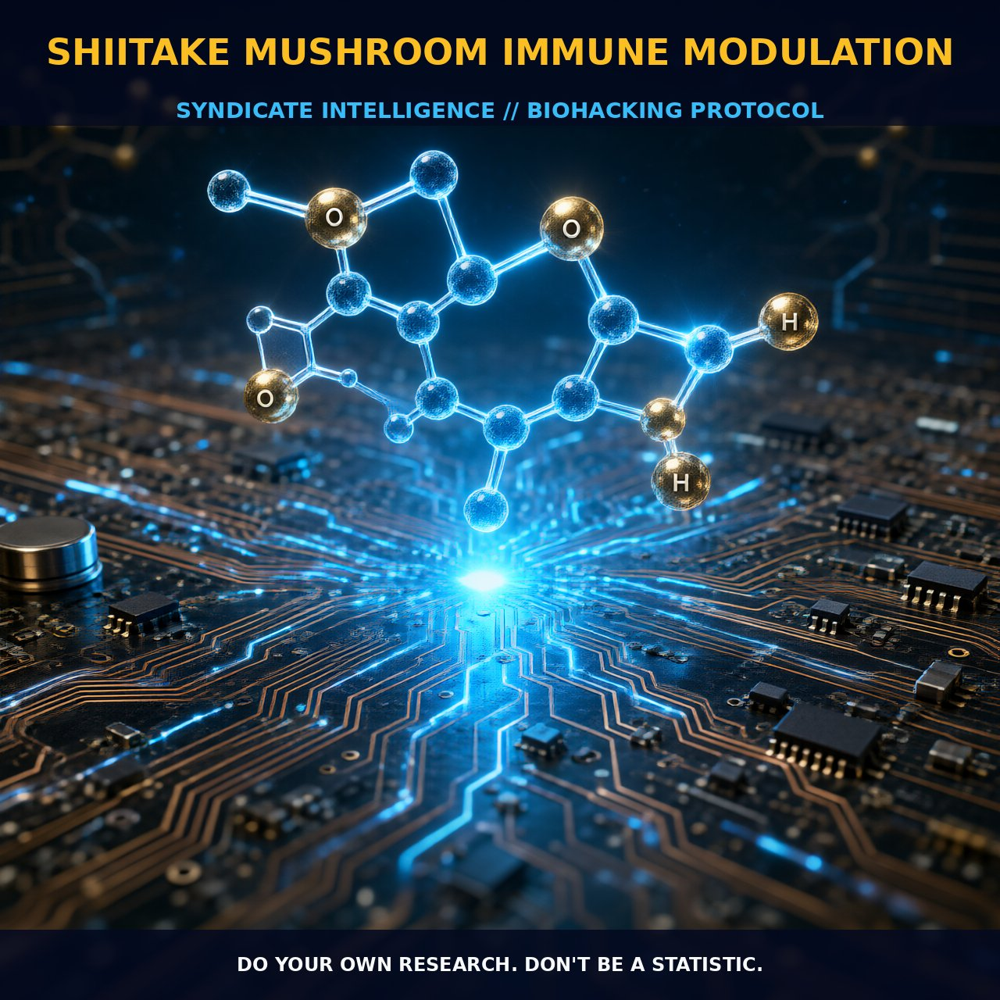

Harnessing the Immunomodulatory Power of Shiitake Mushrooms

1. The Mechanism
Shiitake mushrooms, scientifically known as Lentinula edodes, are celebrated for their immunomodulatory properties, primarily due to the presence of bioactive polysaccharides such as lentinan. Lentinan is a beta-glucan with a unique triple-helix structure, which provides it with exceptional water solubility and gel-forming properties. This polysaccharide has been extensively studied for its ability to enhance the activity of macrophages and natural killer (NK) cells, pivotal components of the body's defense mechanism against pathogens and cancer cells.
Lentinan activates immune cells by binding to specific receptors on the cell surface, such as the Dectin-1 receptor, which triggers a cascade of signaling pathways. These pathways include the activation of toll-like receptors (TLRs) and downstream kinases, leading to the production of cytokines like IL-12, IL-6, and TNF-α. These cytokines further activate immune cells, thereby enhancing cellular immunity and mounting an effective response against foreign invaders.
In addition to lentinan, shiitake mushrooms contain a variety of other bioactive compounds that contribute to their immunomodulatory effects. For instance, they are rich in ergothioneine, an unusual amino acid with cytoprotective properties. Ergothioneine scavenges reactive oxygen species (ROS) and enhances the antioxidant capacity of immune cells, protecting them from oxidative stress and improving their functionality. Additionally, shiitake mushrooms are a source of essential vitamins and minerals, such as vitamin D, selenium, and zinc, which play critical roles in immune function and overall health.
2. Biological Leverage
The immunomodulatory properties of shiitake mushrooms offer significant biological leverage for enhancing immune function. By activating macrophages and NK cells, these mushrooms help the body mount a robust defense against various pathogens, including bacteria, viruses, and fungi. The activation of these immune cells through lentinan binding to Dectin-1 receptors triggers a series of intracellular signaling pathways, ultimately resulting in the production of cytokines such as IL-12, IL-6, and TNF-α. These cytokines not only enhance the activity of immune cells but also promote the differentiation of helper T-cells into the Th-1 subset, crucial for cell-mediated immunity.
The shift towards Th-1 dominance can be particularly beneficial in combating intracellular pathogens and cancer cells, which often thrive in a Th-2 dominant immune environment. Moreover, the ergothioneine content in shiitake mushrooms provides an additional layer of protection by enhancing the antioxidant capacity of immune cells. By scavenging ROS and reducing oxidative stress, ergothioneine ensures that immune cells remain functional and effective in their role of defending the body against pathogens.
Additionally, the vitamin D content in shiitake mushrooms, which can be increased by drying the mushrooms in sunlight, further supports immune function by enhancing the activity of macrophages and T-cells. This synergistic combination of bioactive compounds and immunostimulating polysaccharides makes shiitake mushrooms a potent tool for supporting overall immune health and resilience.
3. Tactical Implementation
To harness the immunomodulatory benefits of shiitake mushrooms, it is essential to understand how to effectively incorporate them into your regimen. While the exact dosing for lentinan and other bioactive compounds in shiitake mushrooms is not well established, incorporating moderate amounts of shiitake mushrooms into your diet can provide substantial benefits. Shiitake mushrooms can be consumed fresh, cooked, or in the form of powders, extracts, or tinctures. Cooking the mushrooms helps to break down some of the cell walls, making the bioactive compounds more bioavailable. For optimal absorption, you can add shiitake powder to smoothies, soups, or stews, or incorporate them into your daily cooking routine.
To maximize the immune-stimulating effects, consider supplementing with double-extracted shiitake mushroom powders or tinctures, as these forms provide a broader spectrum of bioactive compounds. Shiitake mushroom powders can be mixed with coffee, tea, or chocolate for a convenient and delicious way to boost your immune system. Additionally, drying shiitake mushrooms in sunlight can increase their vitamin D content, further enhancing their immune-supporting properties. It is important to note that excessive daily consumption of shiitake mushrooms may strain the kidneys and liver, so moderation is key. Start with small amounts and gradually increase the dosage to assess your tolerance and response.
Stacking shiitake mushrooms with other immune-supporting supplements such as vitamin C, zinc, and probiotics can provide synergistic benefits. Vitamin C and zinc enhance immune function by supporting the production of immune cells and cytokines, while probiotics help maintain a healthy gut microbiota, critical for overall immune health. By combining these elements, you can create a comprehensive immune-supporting regimen that leverages the unique properties of shiitake mushrooms to enhance your body's defense mechanisms.
Prostar Life Hack
To maximize the immune-stimulating effects of shiitake mushrooms, incorporate them into your daily routine in the form of powders, extracts, or tinctures. Mix shiitake powder with your coffee, tea, or chocolate for a convenient and effective boost. Additionally, dry shiitake mushrooms in sunlight to increase their vitamin D content, enhancing their immune-supporting properties.
[ AUTHOR: LEAD TECHNICAL RESEARCHER ]